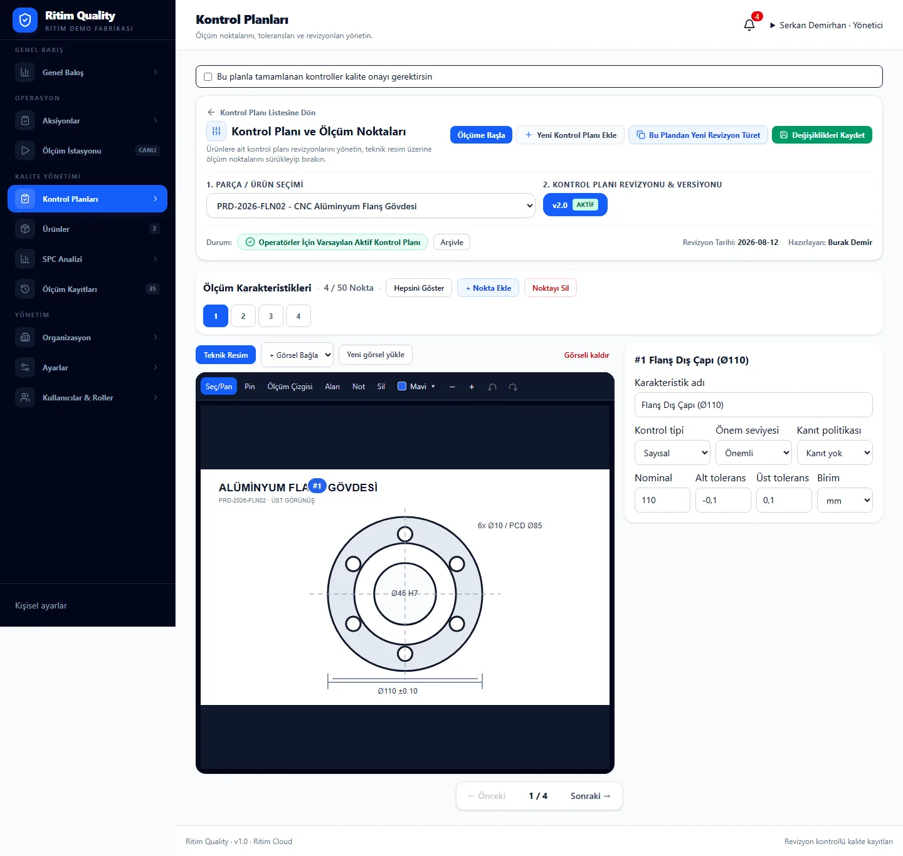
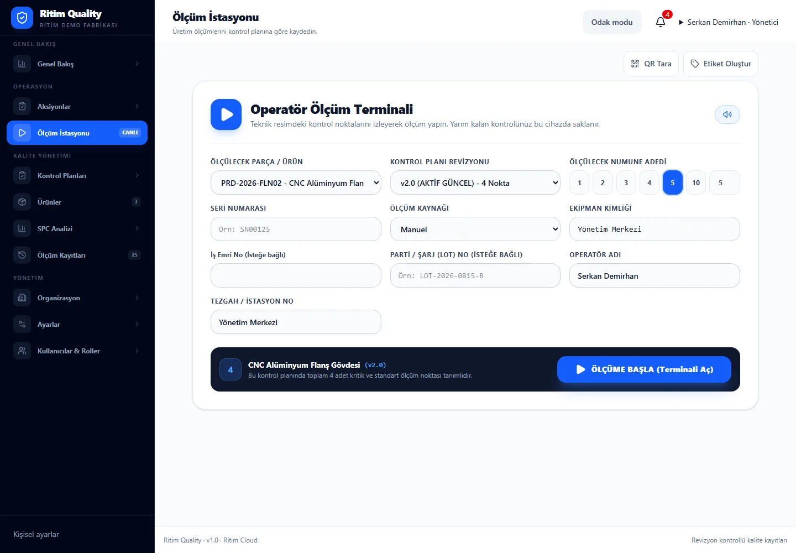
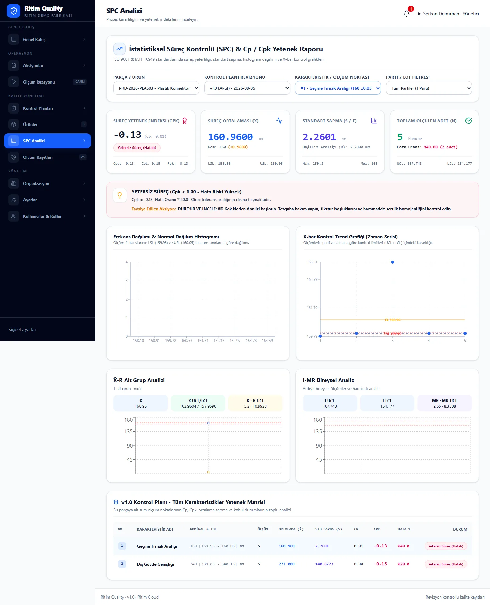

01 — DIGITIZE
Kağıdı değil,
veriyi yönetin.
Kalite formu kaybolmuyor; dijital bir akışa dönüşüyor. Kağıttaki bilgi, kontrol planının yaşayan parçası haline geliyor.
PAPER → DIGITAL
Kontrol planından ölçüme, ölçümden SPC’ye, SPC’den izlenebilirliğe kadar kaliteyi üretimin yaşayan bir parçası haline getirin.
Kalite formu kaybolmuyor; dijital bir akışa dönüşüyor. Kağıttaki bilgi, kontrol planının yaşayan parçası haline geliyor.
Revizyon kontrollü planlar, karakteristikler ve örnekleme mantığı doğrudan üretime bağlanır.
25.14 önce tek başına görünür. Sonra spesifikasyon ve bağlam ortaya çıkar. Böylece sayı karar sinyaline dönüşür.
Sayı küçülür, ilk chart noktasına dönüşür. Diğer ölçümler etrafına gelir ve grafik kendini çizer.
Ürün, lot, iş emri, makine, operatör ve ölçüm sonuçları tek bağlamda birleşir.
Cloud ile hızlı ölçeklenin. On‑Premise ile fabrika altyapısını ve veriyi siz yönetin.
Mobil deneyim burada doğrudan kalite sinyalinin merkezinden başlar.
Sayıdan hemen sonra limitler ve bağlam görünür hale gelir.
25.14 noktaya dönüşür; diğer örneklerle birlikte grafik oluşur.
Lot, ürün, makine ve operatör tek kalite ağında birleşir.
Hızlı devreye alın. Çoklu lokasyonları tek merkezden yönetin ve kolay ölçekleyin.
Fabrika ağı içinde çalışın. Veriyi ve altyapıyı kurum politikalarınıza göre yönetin.
Hareket burada yavaşlar. Ziyaretçi, bir ölçümün artık yalnızca değer değil; bağlam, davranış ve geçmiş olduğunu hisseder.
Ritim Quality’nin bugün çalışan uygulamasından üç ekran: kalite planlama, operatör ölçümü ve SPC analizi. Yeni bir hikâye eklemiyoruz; ürünü olduğu gibi gösteriyoruz.
Kontrol planı revizyonlarını, teknik resmi ve ölçüm karakteristiklerini aynı mühendislik çalışma alanında yönetin.

Operatörün ürün, kontrol planı, numune sayısı ve üretim bağlamını doğrulayıp ölçümü başlattığı sade üretim ekranı.

Cp/Cpk, proses ortalaması, standart sapma ve kontrol grafiklerini tek analiz görünümünde inceleyin.

Screens shown from the current demo environment. Product UI continues to evolve.
Uzun özellik listesi yerine müşterinin aklında kalacak üç net kavram: veriyi yakala, prosesi anla, sistemi bağla.
Kalite planını üretimin içine taşıyın ve doğru veriyi doğru anda toplayın.
Ham ölçümleri proses davranışına ve karar sinyaline dönüştürün.
Kalite verisini ürün, lot, makine, iş emri ve kurumsal sistemlerle bağlayın.
Bu senaryo ürünün bütün parçalarını tek akışta birleştiriyor: plan, üretim, ölçüm, bağlam, analiz ve izlenebilirlik.
Özellikle On‑Premise müşteriler için sahiplik, erişim ve entegrasyon modeli satın alma kararının temel parçasıdır.
Teknik ekibin satış görüşmesinde aradığı kritik başlıkları açıkça gösterin.
Mobilde hikâyeyi doğrudan operatörün gördüğü değerle başlatıyoruz. Bir ekran, bir fikir.
Önce sayı, ardından limitler ve üretim bağlamı. Kullanıcıya aynı anda her şeyi göstermiyoruz.
25.14 artık tek başına değil. Diğer örnekler gelir, noktalar birleşir ve davranış görünür hale gelir.
Mobilde radial ağ yerine okunabilir bir kalite timeline’ı kullanıyoruz.
Ritim Quality’nin mobil deneyimi burada sakinleşiyor ve ürünün ne yaptığını tek cümlede özetliyor.
Mobilde uzun grid yerine yatay swipe ile üç temel ürün dünyası.
Doğru kontrolü doğru anda üretim noktasına taşıyın.
Ham veriyi proses davranışına ve karar sinyaline dönüştürün.
Kalite verisini ürün, lot, makine ve kurumsal sistemlerle bağlayın.
Hızlı devreye alın, çoklu lokasyonları tek merkezden yönetin.
Kaliteyi kontrol edilen bir sonuç değil, üretim boyunca yaşayan ve yönetilen bir süreç haline getirin.